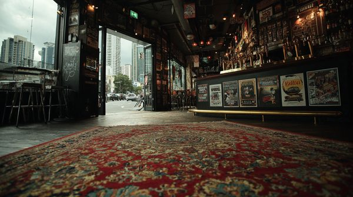

A proper pub for proper people. No pokies, no fancy cocktails, just cold beer and good company.
TODAY's SPECIAL
Chicken Schnitzel & Chips - $18
Reschs on Tap - Coldest in Redfern
NOTICE: MEMBERS OF THE CFMEU ARE BANNED FOR LIFE.
DON'T COME BACK HERE
DAZ, I STILL HAVE THE CRICKET BAT.
> SECURE MSG //
THE SHIV ->
SARAH K
> "Meet me at Marge's pub at 2100. Back booth near the kitchens. Marge has our backs—she literally cracked one of Daz's enforcers in the ribs yesterday when they tried to offer her a buyout. No listening devices survive in this place. I've got the USB from Allie."